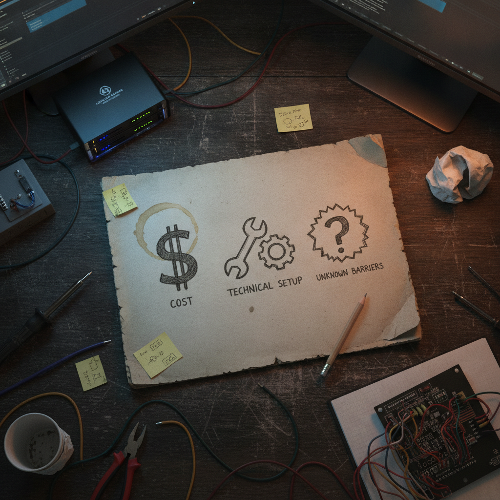

Why a Simple Question From Fry Networks Says a Lot About DePIN Growth
I stopped scrolling on this one because it was not a flex post dressed up as a question. It was an actual question, and it is the kind that tells you more about a project's honesty than any roadmap graphic ever could.
What was bookmarked
@FryNetworks posted a scale update: more than 9,100 devices running across 23 different miner types, spread across 47 countries. Then, instead of just leaving it as a stat flex, they asked their audience directly: what is the biggest barrier keeping you from spinning up a Fry node? Hardware cost, technical setup, or something else entirely. No link, no thread, just the numbers and the question.

Why it matters
DePIN projects live or die on real device counts, not marketing copy. Anyone can claim a network is growing. Fewer projects ask their own community what is stopping adoption, in public, where the answers are visible to everyone else who might be on the fence too.
This matters for the DePIN space generally because the sector has a habit of talking past its actual friction points. Everyone wants to talk about incentives and tokenomics. Fewer people want to talk about the fact that a normal person still has to find hardware, flash firmware, open a port, or figure out which miner type fits their situation. Asking the barrier question directly is a small thing, but it is the kind of small thing that separates projects that want feedback from projects that just want attention.
The practical breakdown
What it does: Fry Networks appears to be building out a distributed device network (the post does not specify what the miners are securing or contributing to, so I am not going to guess beyond what was shared). The scale numbers, 9,100+ devices, 23 miner types, 47 countries, are self-reported in the post itself.
Who it helps: Anyone already running IoT-style or mining hardware who has spare capacity and is DePIN-curious, plus the project itself, which gets a real-time read on adoption friction instead of assuming they know the answer.
Why builders should care: if you are building anything in DePIN, this is a cheap and honest way to gather adoption data. It costs nothing to ask, and the answers (cost vs setup vs something else) point straight at what to fix next, whether that is a cheaper reference hardware kit, a simpler onboarding script, or better documentation.
What still needs work: the post does not include a link to actually get started, which is the one thing missing from an otherwise good adoption-research post. If someone reading it wanted to try spinning up a node right then, there is nothing to click.
What I would test first: if I were running this kind of network, I would take the top answer from the replies and ship one fix for it within a couple weeks, then post the before and after. That is how you turn a question into a growth loop instead of just a poll.
Rick's take
I like this one because it is the opposite of hype. 9,100 devices across 47 countries is a real number worth noticing, and instead of just sitting on it, @FryNetworks turned around and asked what is stopping the next wave of people. That is the right instinct. DePIN networks succeed or stall based on how easy it is for a normal person to go from curious to running hardware, and most projects never actually ask that out loud.
I do not know the internals of what Fry's nodes are doing day to day, the post does not get into that, but the fact that they are treating their own community as a feedback source rather than just an audience is the part I want to see more of across the space.
What to watch next
Worth watching whether Fry Networks follows up publicly on what people actually say the barrier is, and whether that turns into a concrete change, a cheaper hardware path, a simpler setup guide, or something else. That follow-through is usually the real signal, more than the initial device count.
Source and links
Source: X post by @FryNetworks, https://x.com/i/web/status/2077234220875891021, Retrieved on 2026-07-15. No external references were included in the source post.